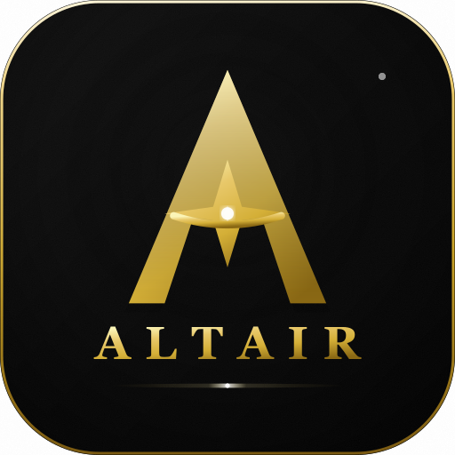
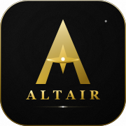
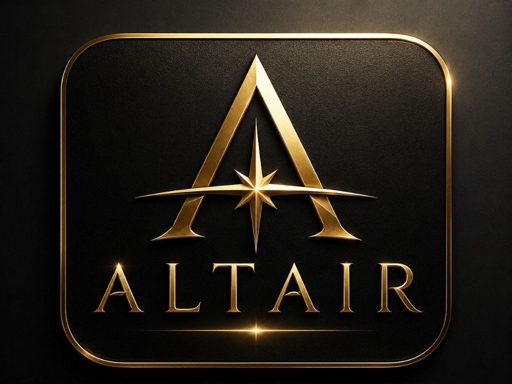

Reference analysis (from crop)
Elements extracted and rebuilt on a true square canvas.
- Container — Squircle plate (
rx=112on 512) fills the canvas; matte black gradient + grain texture. - Gold rim — 3px metallic stroke with top-lit sheen and upper-right specular glint.
- Stylized A — Approved mark geometry from
altair-icon.svg; diagonal gold gradient + bevel/shadow layers. - Center star — Four-point star + horizon arc; white glint at star center.
- ALTAIR wordmark — Georgia serif, tracked caps, gold gradient; scaled for square vertical rhythm.
- Lighting — Plate vignette, rim highlight, star glint, bottom horizontal flare with center hotspot.
Native square previews
Source: altair-v1-app-icon-native.svg — artwork fills the squircle; no empty top/bottom bands.

512 × 512 display 256px
180 × 180
120 × 120
60 × 60
Reference vs native (comparison)
Left: visual reference crop (non-square). Right: native square rebuild.

Visual reference only (do not ship)
Rectangular crop from approved concept — not used as final icon geometry.